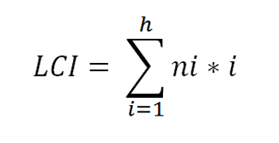
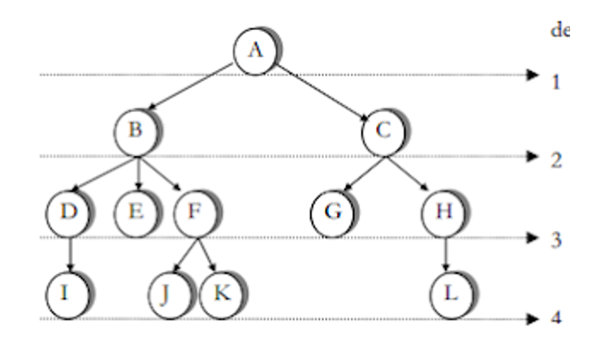
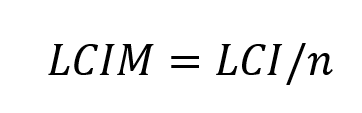
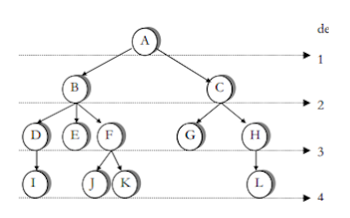
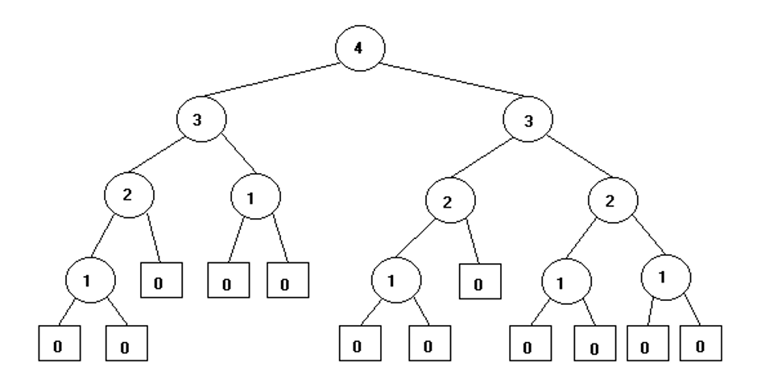
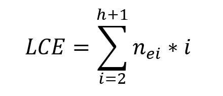
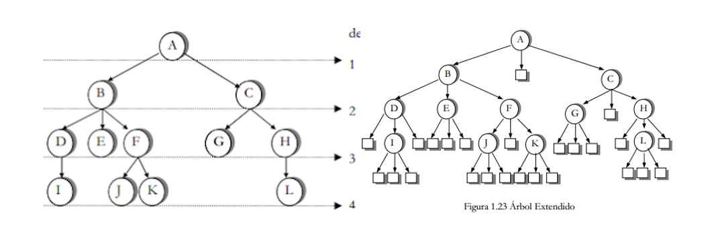

Desde el punto de vista conceptual, un árbol es un caso particular de grafo, es un objeto que comienza con una raíz y se extiende en ramificaciones o líneas que terminan en un nodo.
Es el número de arcos que deben ser recorridos desde la raíz hasta el nodo X. Cuando hablamos de longitud de un árbol, debemos diferenciar los siguientes conceptos:
- Longitud de camino.
- Longitud de camino interno.
- Longitud de camino externo.
la longitud de camino X como el número de arcos que deben ser recorridos para llegar, desde la raíz, al nodo X
Es la suma de las longitudes de camino de todos los nodos del árbol.
 LCI= 36
* 1 = 1
2 * 2 = 4
5 * 3 = 15
4 * 4 = 16
Es el número de arcos que deben ser recorridos en promedio para llegar de la raíz a un nodo cualquiera del árbol.
En donde LCI = longitud de camino interno y "n" =número de nodos del árbol.
LCI= 36
1 * 1 = 1
2 * 2 = 4
5 * 3 = 15
4 * 4 = 16
LCIM = 3
LCI/N
36/12
Es aquel en el que el número de hijos de cada nodo es igual al grado del árbol. Para que se cumpla esta condición si es necesario se le agregan nodos especiales al árbol, tantos como sea necesario para que se cumpla la condición.
Su objetivo es reemplazar las ramas vacías o nulas y no pueden tener descendientes.
La longitud de camino externo LCE es la suma de las longitudes de camino de todos los nodos especiales de un árbol.
En donde "h" = altura del árbol, "i" = nivel del árbol y "nei" = número de nodos especiales en el nivel "i".
LCE = 109
1 * 2 = 02
1 * 3 = 03
11 * 4 = 44
12 * 5 = 60